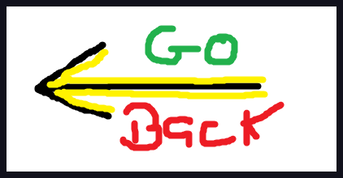

These are some main attractions of the Swedish Laplands
Midnight Sun - The most famous of them all
Ice Hotel - best to go in winter but open year round
Abisko National Park - great place for hiking
Mount Låktatjåkka - great place for hiking
kebnekaise - great place for hiking
Kiruna Adventure
Reindeer Lodge
Lake Torneträsk
Arctic Gourmet Cabin
